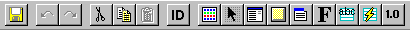

IDDE
Reference
Part 1: Welcome to Digital Mars C++
1. Introducing Digital Mars C++
2. Introducing the IDDE
Part 2: Creating an Application with Digital Mars C++
3. Starting a Project and Defining Workspaces
4. Generating an Application Framework
5. Defining Classes and Their Hierarchies
6. Editing Program Code
7. Adding Look and Feel with Resources
8. Testing an Application
Part 3: Learning Digital Mars C++ by Example
9. Introduction to the Tutorial
10. Lesson 1: Create the DOS Application
11. Lesson 2: Generate an Application Framework
12. Lesson 3: Customize the Interface
13. Lesson 4: Add Messages with ClassExpress
14. Lesson 5: Add a Dialog Box with ClassExpress
Part 4: More about Creating Programs
15. More about Projects and Workspaces
16. More about Project Build Settings
17. More about AppExpress
18. More about ClassExpress
19. Class Editor Reference
20. Hierarchy Editor Reference
21. Text Editor Reference
22. Using Version Control
Part 5: More about Testing Programs
23. Controlling and Configuring the Debugger
24. Commands Available in Debugging Mode
Part 6: About Managing Resources
25. ResourceStudio Resource Editor
26. Dialog Editor
27. Menu, Accelerator and String Table Editors
28. Bitmap, Cursor, Icon, and Font Editors
29. Version Information and Custom Resource Editors
Part 7: Appendixes
A. Expression Evaluation
B. IDDE Settings and Command-Line Options
C. Using NetBuild
|
25. ResourceStudio Resource Editor
This ResourceStudio reference chapter contains details about the
commands and options found in the Shell and Browser windows.
For an introduction to ResourceStudio, see
Chapter 7, Adding Look and Feel with Resources.
The Shell Window
The ResourceStudio Shell window is:
Figure 25-1 The Shell window
The Shell window is ResourceStudio's main control center.
It opens resource files, creates new resource files, sets
preferences, arranges windows, and accesses online help.
File menu commands
The File menu (see Figure 25-2) contains commands to create and
open resource files and to exit ResourceStudio. In addition to the
commands listed below, the File menu contains a list of recently
opened resource files.
Any of these files may be reopened by choosing its name from the
menu.
[Figure 25-2 Shell window File menu
- New
- Opens the New File dialog box (see Figure 25-3). Use this dialog
box to create a new resource file.
[Figure 25-3 New File dialog box
- Type
- Specifies the type of resource file to create.
| Resource script
| Creates a resource script (.rc) file
|
| Binary resource
| Creates a binary resource (.res) file
|
| Icon
| Creates an icon (.ico) file
|
| Cursor
| Creates a cursor (.cur) file
|
| Bitmap
| Creates a bitmap (.bmp) file
|
| Font
| Creates a font (.fnt) file
|
For Resource Script or Binary Resource, the new file opens
in a Browser window; otherwise, the appropriate resource editor
opens in a separate window.
- Platform
- Specifies the target platform for the resource file.
| Windows 3.1
| Creates resources for Windows 3.1
|
| Windows NT
| Creates resources for Windows NT
|
| Windows 95
| Creates resources for Windows 95
|
Windows 95 resources use the MENUEX and DIALOGEX resource
types for menus and dialogs, respectively. For more information, see
your Windows 95 documentation.
- Support MFC
- Applies to resource script files; specifies that the file should include
MFC resource headers. Check this box if you plan to use your
resources in an MFC application.
- Open
- Opens the File Open dialog box (see Figure 25-4). This is a standard
dialog box for opening files, with an extra field for specifying the
target platform.
[Figure 25-4 File Open dialog box
- Target platform
- Specifies the target platform. Choices include Windows 3.1,
Windows NT, and Windows 95.
- Exit
- Closes ResourceStudio.
Edit menu commands
The Edit menu (see Figure 25-5) contains a single command, used to
set ResourceStudio preferences.
[Figure 25-5 Shell window Edit menu
Preferences
Opens the Preferences dialog box, used to set miscellaneous
ResourceStudio options. This dialog box has three tabs of options.
Note:
The Controls tab of options is not available when
running ResourceStudio on Windows 95 and Windows NT.
The General tab (see Figure 25-6) contains miscellaneous
ResourceStudio options.
[Figure 25-6 General tab of Preferences dialog box
- Undo
- Specifies the number of previous states that are saved and, therefore,
the number of actions that can be undone. Each Browser window
and each individual resource editor keeps a separate list of actions
that were undone.
- Assume File Platform
- These options specify default file platforms for creating and loading
resource files.
- When Creating Files:
- Specifies default platform for new resource files.
- When Opening Files:
- Specifies default platform for opened resource files.
- 3D Look for New Dialogs
- If checked, new dialogs are given a 3-dimensional look by default.
The RC Script tab (see Figure 25-7) contains options for resource
script files.
[Figure 25-7 RC Script tab of Preferences dialog box
- Definitions
- Contains a list of symbols to be defined with a #define directive in
each .rc file. Click on a symbol to copy its name and value to the
textboxes below the list. You can edit the name or value, then click
on the symbol in the list again to copy the new name and value back
to the list.
- Name
- Contains a symbol name.
- Value
- Contains a symbol value.
- Add
- Adds the current symbol and value to the Definitions list.
- Remove
- Deletes the currently selected symbol from the Definitions list.
The Controls tab (see Figure 25-5) contains options for installing
custom controls. A custom control resides in a DLL that implements
the standard functions which allow a dialog editor (such as
ResourceStudio) to manipulate and display the control.
Note:
The Controls tab of options is not available when
running ResourceStudio on Windows 95 and Windows NT.
[Figure 25-8 Controls tab of Preferences dialog box
- Installed Controls
- Contains a list of custom control DLLs that are currently installed.
- Add
- Adds a custom control DLL to the list of installed controls.
- Remove
- Removes a custom control DLL from the list of installed controls.
Window menu commands
The Window menu (see Figure 25-8) contains commands to arrange
ResourceStudio windows. These commands execute the standard
Windows Cascade, Tile, and Close All functions. Attached to the
bottom of the menu is a list of currently opened Browser and editor
windows. Choose a window name to bring that window to the
foreground or to restore it after it has been minimized.

[Figure 25-9 Shell window Window menu
Help menu commands
The Help menu (see Figure 25-9) contains commands to access
online help and to display program information.
[Figure 25-10 Shell window Help menu
- Index
- Opens ResourceStudio online help to the index.
- Using Help
- Opens online help to information about how to use help.
- About ResourceStudio
- Opens a dialog box that displays ResourceStudio version and
copyright information.
Toolbar commands
The Shell window toolbar provides quick access
to menu commands and to context-sensitive help:

[Figure 25-11 Shell window toolbar]
|
| Creates a new resource script file and opens it in a Browser
window. The platform is set to the default platform for creating new
files (as set in the Preferences dialog box).
|
|
| Same as choosing Open from the File menu, except that the
target platform for the resource is automatically set to the last
platform chosen with File Open.
|
|
| Same as choosing About ResourceStudio
from the Help menu.
|
|
| Enters context-sensitive help mode. A
question mark is appended to the cursor while in this mode. Select
any component of ResourceStudio, such as a menu item or a toolbar
icon, to open the online help for information about that component.
|
The Browser Window
The Browser window (see Figure 25-11) supervises the editing of a
multiresource file, such as a resource script file. The resource types
contained in the file are listed in the upper-left pane; when a type is
selected, the resources of that type are listed in the lower-left pane.
The right pane contains a preview of the currently selected resource.
[Figure 25-12 The Browser window
Individual resources can be edited either in separate windows or in
the right pane of the Browser window. In the latter case, the menu
bar of the resource editor replaces the Browser window's menu bar
during editing.
File menu commands
The File menu (see Figure 25-12) contains commands to save the
resource file, to edit resources, and to perform other miscellaneous
functions.
[Figure 25-13 Browser window File menu
- Save
- Saves the resource file. If the file is unnamed, this command
executes Save As.
- Save As
- Opens a Windows File Save As dialog box, which can be used to
save the resource file under a new name.
- Edit Resource
- Opens the selected resource in the right pane of the Browser
window so that the resource can be edited. This command is also
executed by double-clicking on a resource, or double-clicking in the
right pane when a preview of the resource is displayed there.
- Edit in Separate Window
- Opens the selected resource in a separate window so that the
resource can be edited.
- Export Resource
- Opens a dialog box that can be used to save the currently selected
resource in a separate file. This command is only available when the
current resource is a bitmap, icon, cursor, or font.
- Edit Resource IDs
- Opens the Resource ID Browser dialog box (see Figure 25-13).
This dialog box is used to browse and modify resource IDs.
[Figure 25-14 Resource ID Browser dialog box
For more information about managing resource IDs and using the
Resource ID Browser dialog box, see "Managing Resource IDs," in
Chapter 7, "Adding Look and Feel with Resources."
- ClassExpress
- Runs ClassExpress and passes the filename of the resource file as the
project that ClassExpress should open. You should run ClassExpress,
for example, after creating a dialog box. With ClassExpress you
can create a class for the dialog box, set up a message map, and
add member variables corresponding to controls. For more
information, see Chapter 18, "More about ClassExpress," and
Chapter 14, "Lesson 5: Add a Dialog Box with ClassExpress."
- Close
- Closes the Browser window.
Edit menu commands
The Edit menu (see Figure 25-15) contains standard editing
commands. You can copy and paste entire resources, making it easy
to move resources from one file to another.
[Figure 25-15 Browser window Edit menu
- Undo
- Undoes the last Browser window operation.
- Redo
- Redoes the last Browser window operation that was undone.
- Cut
- Copies the selected resource to the Clipboard, then deletes it from
the resource file.
- Copy
- Copies the selected resource to the Clipboard.
- Paste
- Copies the resource in the Clipboard into the resource file.
Delete
- Deletes the selected resource from the resource file.
Resource menu commands
Commands in the Resource menu (see Figure 25-16) are used to
create new resources. In each case, a new ID is automatically
created and assigned to the resource, and the resource is opened in
the right pane of the Browser window so that the resource can be
edited.
[Figure 25-16 Browser window Resource menu
- New Dialog Box
- Creates a new dialog box. As the resource is created, the
DialogExpress dialog box lets you select a predefined dialog type
to use as a starting point (see "Dialog Editor," in Chapter 26, "Dialog
Editor").
- New Bitmap
- Creates a new bitmap. As the resource is created, the
BitmapExpress dialog box lets you specify initial bitmap
parameters (see "Bitmap Editor," in Chapter 28, "Bitmap, Cursor,
Icon, and Font Editors").
- New Icon
- Creates a new icon.
- New Cursor
- Creates a new cursor.
- New Menu
- Creates a new menu.
- New Font
- Creates a new font. As the resource is created, the FontExpress
dialog box lets you specify initial font parameters (see "Font Editor,"
in Chapter 28, "Bitmap, Cursor, Icon, and Font Editors").
- New String Table
- Creates a new string table.
- New Accelerator Table
- Creates a new accelerator table.
- New Version
- Creates a new version information resource.
- New Other
- Opens the Create Custom Resource dialog box (see Figure 25-17). Use this
dialog box to select a custom resource type to create and to define
new custom resource types.
[Figure 25-17 Create Custom Resource dialog box
To create one of the listed resource types, select it and click OK. To
define a new resource type, click on Add Type. The New Resource
Type dialog box opens (see Figure 25-18).
[Figure 25-18 New Resource Type dialog box
Type a name for the new resource type in the textbox and click OK.
The new type is added to the list in the Create Custom Resource dialog
box.
Toolbar commands
The Browser window toolbar provides quick
access to frequently used menu commands:

[Figure 25-19 Browser window toolbar]
|
| Same as choosing Save from the File menu.
|
|
| Same as choosing Undo from the Edit menu. Right-click on
this button to undo multiple operations at once.
|
|
| Same as choosing Redo from the Edit menu. Right-click on
this button to redo multiple operations at once.
|
|
| Same as choosing Cut from the Edit menu.
|
|
| Same as choosing Copy from the Edit menu.
|
|
| Same as choosing Paste from the Edit menu.
|
|
| Same as choosing Edit Resource IDs from
the File menu.
|

| Same as choosing New Bitmap from the Resource
menu.
|
|
| Same as choosing New Cursor from the Resource
menu.
|
|
| Same as choosing New Dialog Box from the
Resource menu.
|
|
| Same as choosing New Icon from the Resource menu.
|
|
| Same as choosing New Menu from the Resource
menu.
|
|
| Same as choosing New Font from the Resource menu.
|
|
| Same as choosing New String Table from the
Resource menu.
|

| Same as choosing New Accelerator Table
from the Resource menu.
|
|
| Same as choosing New Version from
the Resource menu.
|
Resource properties
When the Browser window is active and a resource in the lower-left
pane is selected, the Property Sheet displays properties of the
resource, which specify the resource ID and the resource memory
options. Figure 25-20 shows the properties of a Menu resource.
[Figure 25-20 Resource properties
| ID
| Specifies the resource ID by one of the following:
- Select an existing ID from the drop-down list.
- Type a new symbol for the resource ID. The ID is
assigned a new, unique value.
- Type a new symbol, followed by an equal sign, followed
by a value (for example, IDC_NAME=550). If you do
not specify a value, one is supplied. The ID is assigned
the value.
- Type a textual resource identifier, enclosed in double
quotes (for example, "MenuOne"). Textual IDs cannot
be assigned to font resources.
|
| Preload
| Specifies that the resource should be loaded into memory when the
application is started. If this option is not checked, the resource is
loaded when it is needed.
|
| Moveable
| Lets Windows move the resource in memory after it is loaded.
|
| Discardable
| Lets Windows remove the resource from memory when it is no
longer needed.
|
| Pure
| Protects the resource in memory from being modified.
|
| |
 Home
| Search
| CTG
| RTL
| IDDE
| STL
Home
| Search
| CTG
| RTL
| IDDE
| STL